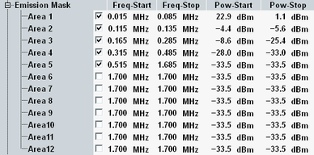

The energy, that spills outside the designated radio channel, increases the interference with adjacent channels and decreases the system capacity. The amount of unwanted off-carrier energy is assessed by the out-of-band emissions (excluding spurious emissions). They are specified in terms of the spectrum emission mask and the adjacent channel leakage power ratio (ACLR).
The spectrum emission mask can be defined in the configuration dialog. The following figure shows the settings. For each emission mask area, you can define the frequency borders and set an upper power limit for each frequency border. The resulting points are connected via straight limit lines.
The start and stop frequencies of each emission mask area are defined relative to the edge of the 200-kHz channel.
Assume 0.3 MHz as start frequency and 0.5 MHz as stop frequency. The resulting area ranges from +0.4 MHz to +0.6 MHz relative to the carrier frequency. As all ranges are symmetrical, it ranges also from -0.4 MHz to -0.6 MHz relative to the carrier frequency.

The default settings are suitable to check the 3GPP requirements.